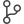
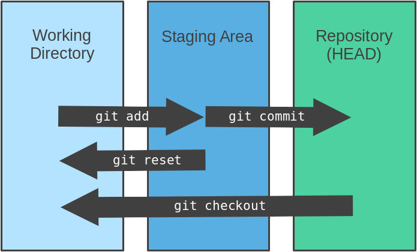

Kennismaken met Git
Contents
Kennismaken met Git#

Fig. 1 Copy of Copy of Copy of Copy of Copy of Copy of Copy of Copy of Copy of Copy of Copy of Copy of Copy of Copy of Copy of Copy of Copy of Copy of Copy of Copy of Copy of Copy of Copy of Copy of Copy of Copy of Copy of Copy of Copy of Copy of Copy of Copy of Copy of Untitled.doc – XKCD Documents#
Versiebeheerystemen als Git zijn hulpmiddelen die worden gebruikt om wijzigingen in code (of andere verzamelingen van bestanden en directories) bij te houden. Ze zijn bijzonder nuttig, bijvoorbeeld om oude momentopnames van een te project bekijken, een logboek bij te houden van waarom bepaalde wijzigingen zijn gemaakt en nog veel meer.
Maar in het bijzonder als je met gaat samenwerken zal je snel merken dat het een onmisbaar hulpmiddel is om te zien wat anderen hebben gewijzigd, deze wijzigingen in jouw versie op te nemen en mogelijke conflicten op te lossen bij gelijktijdige ontwikkeling (zonder elkaars werk te overschrijven).
Git zal je eerst moeten installeren, zie versiebeheer met Git als je dit nog niet hebt gedaan.
Git gebruiken#
Git is een command line applicatie en jouw eerste kennismaking zal ook op de command line zijn, en dit is niet zonder reden … Hoewel Git versiebeheer heel erg vergemakkelijkt en veel handelingen voor jou op de achtergrond uitvoert zal het jou nog steeds veel vragen over wát je wilt uitvoeren (en je daarom ook weer kennis moet hebben van wat Git op de achtergrond gaat uitvoeren).

Fig. 2 If that doesn’t fix it, git.txt contains the phone number of a friend of mine who understands git. Just wait through a few minutes of ‘It’s really pretty simple, just think of branches as…’ and eventually you’ll learn the commands that will fix everything. – XKCD Git#
Git wordt om deze reden ook wel een leaky abstraction genoemd waarmee wordt bedoeld dat hoewel het de details van versiebeheer voor zijn rekening neemt jij nog steeds de bijzonderheden van deze details moet weten. Dit betekent dat je in de volgende oefeningen met veel Git commando’s kennis gaat maken (misschien zelfs teveel, zie de bovenstaande XKCD Git scène…).
VSCode en Git
VSCode en andere editors kennen Git en hebben daar ook vaak grafische ondersteuning voor. In de volgende stappen ga je kennismaken met Git op de command line, bij elke stap laten we ook zien wat VSCode zal tonen en hoe dit overeenkomt met wat jij op de command line uitvoert.
In de volgende oefeningen ga je een directory met een aantal bestanden aanmaken en deze verzameling van bestanden wordt een project dat je met Git gaat beheren.
Een nieuw project#
Maak een nieuwe directory aan, bijvoorbeeld met de naam my_project en cd daar vervolgens naar toe
mkdir my_project
cd my_project/
Dit wordt jouw working directory, de plek waar je bestanden gaat toevoegen, wijzigen of verwijderen en je gaat Git gebruiken om al deze handelingen te volgen en vast te leggen in versies van jouw project.
Versiebeheer met Git#
Deze directory (die nu nog leeg is) ga je nu onder versiebeheer brengen met Git
git init
Git zal hier iets zeggen als Initialized empty Git repository in […].
Controleer nu de inhoud van deze directory, je zal zien dat een .git directory is aangemaakt.
In de directory .git zal Git een adminstratie bijhouden van alle wijzigingen die jij gaat maken. Git doet dit niet automatisch, jij zal Git steeds moeten gaan vertellen wat het moet doen!
VSCode en versiebeheer#
Je hebt zojuist een directory met Git onder versiebeheer gebracht met git init. Deze en alle volgende Git handelingen kan je in VSCode links onder Source Control  vinden.

Fig. 3 VSCode Source Control#
VSCode zal daar de optie Initialize Repository tonen waarmee het op de achtergrond git init voor jou uitvoert. Let op, je ziet deze optie alleen als er nog geen Git repository is geinitialiseerd!
Bestanden toevoegen#
Kopiëer het volgende en sla het op in het tekstbestand a.txt
a1
a2
a3
a4
en kopiëer vervolgens het volgende en sla het op in het tekstbestand b.txt
b1
b2
b3
b4
Vraag Git nu de status van jouw project
git status
De uitvoer zal als volgt zijn
On branch main
No commits yet
Untracked files:
(use "git add <file>..." to include in what will be committed)
a.txt
b.txt
nothing added to commit but untracked files present (use "git add" to track)
Git geeft hier aan dat zowel a.txt als b.txt untracked zijn, ze worden nog niet door Git gevolgd en het zal nog geen wijzingen bijhouden.
VSCode en Git#
Als je na de bovenstaande handelingen in VSCode onder Source Control kijkt zal je herkennen wat je zojuist in de melding van Git hebt gezien.

Fig. 4 VSCode Git untracked files#
Onder Changes zie je de bestanden a.txt en b.txt en zie je naast de bestanden de letter U, wat untracked aangeeft.
Wijzigingen opslaan#
Je hebt zojuist de bestanden a.txt en b.txt opgeslagen. Git heeft een ander idee bij wat “opslaan” is zoals je net hebt gedaan, het ligt iets genuanceerder!
Het Git equivalent voor opslaan is een commit. Wanneer we het hebben over het opslaan van een bestand dan bedoelen we meestal de handeling die een nieuw bestand wegschrijft, of een bestaand bestand overschrijft met de gewijzigde inhoud. Een Git commit is echter een handeling die betrekking heeft op een verzameling van bestanden en directories en legt een bepaalde staat van dat moment vast (het maakt een “snapshot”, een momentopname).
Je zou nu misschien verwachten dat er een Git commando is om een snapshot te maken van de huidige toestand van jouw working directory (de directory waar je aan het werken bent), maar dit is niet niet het geval!
In de praktijk wil je vaak geïsoleerde of samenhangende snapshots maken en dan is het niet altijd ideaal om een volledige snapshot te maken van jouw working directory. Stel je bijvoorbeeld de volgende scenario’s voor
Je hebt hard aan een oplossing gewerkt en bent nog bezig met een tweede die voortbouwt op de eerste en je wilt dit graag in twee aparte commits opdelen, één die de eerste oplossing introduceert en een volgende voor de tweede oplossing als deze klaar is.
Je bent een fout opgespoord en je hebt naast de oplossing (de bugfix) ook veel print statements hier en daar toegevoegd tijdens het testen. Je wilt alleen de oplossing (de bugfix) in een commit opnemen en niet de willekeurige print statements.
Git ondersteunt zulke scenario’s door jou te laten specificeren welke wijzigingen moeten worden meegenomen in een volgende snapshot via een mechanisme dat de staging area heet.
Staging area#

De staging area is waar je bestanden en directories voor Git klaarzet die je later als een snapshot wilt vastleggen in een commit.
Vergelijk jezelf hier met een regisseur die een scène inricht om daar later een opname van te maken. Twee Git commando’s zijn in deze fase van belang
git addVoeg bestanden of directories toe aan de staging area
git resetHaal bestanden of directories uit de staging area
Notitie
Git add en reset zijn administratieve handelingen voor Git, het zal met deze commando’s jouw bestanden niet wijzigen (door ze bijvoorbeeld te kopiëren of verwijderen).
git add#
Voeg nu het bestand a.txt toe aan de staging area met git add
git add a.txt
en vraag vervolgens de huidige status op
git status
De uitvoer zal als volgt zijn
On branch main
No commits yet
Changes to be committed:
(use "git rm --cached <file>..." to unstage)
new file: a.txt
Untracked files:
(use "git add <file>..." to include in what will be committed)
b.txt
Het bestand a.txt staat nu klaar in de staging area (Changes to be committed). Git geeft ook aan dat het een new file is omdat het bestand is nog niet eerder onderdeel is geweest van een commit.
Tip
Soms is het te bewerkelijk om één voor één bestanden aan de staging area toe te voegen en zou je liever meerdere bestanden of directories in één keer willen toevoegen. Je kan hier de volgende opties voor gebruiken:
git add .Voegt de huidige directory recursief toe, inclusief bestanden waarvan de naam met een punt begint
git add -AZet alle bestanden klaar, inclusief nieuwe, gewijzigde en verwijderde bestanden en inclusief bestanden in de huidige directory en in hogere directories die nog steeds tot hetzelfde project behoren.
git reset#
Met git reset kan je een bestand uit de staging area halen, mocht het nodig zijn.
Probeer dit met het bestand a.txt dat je zojuist hebt toegevoegd
git reset a.txt
en bekijk het resultaat vervolgens met git status. Git zal nu als uitvoer geven dat zowel a.txt als b.txt untracked zijn, dit is de situatie waar je mee bent begonnen!
Let op
Voeg nu het bestand a.txt weer toe aan de staging area want je hebt het staks nodig voor een allereerste commit …
git add a.txt
VSCode en staging#
Je hebt zojuist een bestand aan de staging area toegevoegd en daar weer uitgehaald (en weer opnieuw aan toegevoegd), hoe worden deze handelingen met VSCode uitgevoerd?
Fig. 5 VSCode Git stage changes#
Als je met de muis over een bestand in Changes zweeft zullen extra opties zichtbaar worden. Onder deze opties zie je +, en als je daar vervolgens op klikt zal VSCode git add aanroepen voor dat bestand en het in de staging area plaatsen.

Fig. 6 VSCode Git staged changes#
VSCode zal bestanden die zich in de staging area bevinden tonen onder Staged Changes. Je zal daar naast een bestand A zien wat voor added staat en dit komt overeen met wat Git jou eerder liet zien voor bestanden voor Changes to be committed.
Fig. 7 VSCode Git unstage changes#
Net als bij bestanden in Changes kan je ook met de muis over bestanden in Staged Changes zweven om extra opties zichtbaar te maken. Je zal dan een optie - zien en met een klik daar op zal VSCode git reset voor dat bestand uitvoeren en het voor jou uit de staging area halen.
Repository#

De repository is uiteindelijk waar de wijzigingen die jij hebt klaargezet worden bewaard door middel van een commit. Dit proces zal je vele malen gaan herhalen en zo zal je met Git een geschiedenis gaan opbouwen van jouw project.
Dit is hét moment dat je de snapshot gaat maken, drie Git commando’s zijn in deze fase van belang
git commitMaak een commit van bestanden en directories in de staging area
git checkoutVervang een bestand of directory in de working directory met een versie uit de repository
git logToon het logboek van commits
git commit#
Nu is het tijd voor de allereerste commit! Voer het volgende Git command uit
git commit -m "a.txt toegevoegd"
Notitie
Elke commit heeft een commit message nodig, een korte en bondige tekst die de commit beschrijft en deze wordt onderdeel van de commit. Als je gaat samenwerken zullen anderen deze tekst ook zien, zorg er dus altijd voor dat het begrijpelijk en betekenisvol is!
Let op, de commit message wordt hier met de extra -m optie toegevoegd, plaats de tekst die op deze optie volgt altijd tussen aanhalingstekens.
Git zal met het volgende bericht vertellen dat de commit succesvol was
[main (root-commit) 92ac06d] a.txt toegevoegd
1 file changed, 4 insertions(+)
create mode 100644 a.txt
Dit bericht is wat cryptisch! Op de eerste regel herken je in ieder geval jouw commit message (“a.txt toegevoegd”) en verder zie je een code 92ac06d. Deze code is de hash waarde van deze commit en dit is een unieke waarde die de commit identificeert, en zal om deze reden voor jou een andere waarde hebben. Het belang van deze hash zal je later terugzien.
Op de tweede regel lees je dat één bestand (a.txt) is aangepast te opzichte van de vorige commit. Deze was er natuurlijk niet dus wat Git betreft is één nieuw bestand toegevoegd met 4 regels aan inhoud (de vier regels van .txt, “a1” tot en met “a4”).
git log#
Na deze eerste commit zullen nog vele commits volgen, met git log kan je een overzicht vragen van de commits tot nu toe.
git log
De uitvoer zal als volgt zijn
commit 7e971aaf1d0333163322ab580e500f3fc2ab4ce8 (HEAD -> main)
Author: Misja Hoebe <misja.hoebe@pm.me>
Date: Wed Dec 15 22:55:09 2021 +0100
a.txt toegevoegd
Hier zie je de volledige hash van de commit en meer informatie door wie en wanneer deze commit is gemaakt. Typ nu het volgende
git log --oneline
Met de optie --oneline kan je een beknopte geschiedenis opvragen, je zal zien dat in de uitvoer alleen de verkorte hash en de commit message wordt getoond (als het aantal commits groter wordt dan kan worden getoond kan je er met de <spatie>-toets doorheen stappen, typ q om het bladeren te stoppen).
VSCode en commits#
Het zal je misschien zijn opgevallen dat onder Source Control je altijd een veld ziet met Ctrl+Enter to commit on ‘main’.
Fig. 8 Git commit#
HEAD#

Je ziet in de log ook HEAD -> main staan, maar wat betekent dit? main is de naam van de hoofdlijn van de ontwikkeling (waar je op dit moment commits aan toegevoegt). HEAD is een “alias” en zal altijd verwijzen naar de laatste commit in een huidige lijn, of branch (een vertakking) zoals het vaker wordt genoemd.
Kort gezegd betekent HEAD -> main dat je op dit moment naar de geschiedenis van de branch main kijkt omdat HEAD op dit moment verwijst naar de laatste commit in deze branch. Dit impliceert dat er misschien ook meerdere branches kunnen zijn en dat is ook zo (maar daar gaan we nu nog niet bij stilstaan)!
git checkout#
Je hebt nu een eerste commit gemaakt waarmee je de status van jouw project op dit moment hebt vastgelegd. Dit betekent dat je nu ook een punt hebt om naar terug te keren, mocht het nodig zijn. Je zou je kunnen voorstellen dat je te maken krijgt met de volgende scenario’s
Na de commit ben je verder gaan werken want je gaat nu de functionaliteit verder uitbreiden. Maar je loopt tegen een hardnekkige fout aan die je niet kan oplossen. Je weet dat in de vorige commit alles in orde was en wilt deze versie weer als uitgangspunt nemen.
Na de commit ben je bestanden gaan opruimen, oude code waarvan je zeker weet dat het niet meer wordt gebruikt. Maar je hebt je vergist, de code werd tóch nog gebruikt en nu werkt niets meer! Je zou heel graag de oorsporonkelijke versie uit de laatste commit weer toe willen voegen aan jouw project.
Laten we het tweede (worst case!) scenario doorlopen, en gooi het bestand a.txt weg
rm a.txt
Controleer voor de zekerheid dat a.txt écht weg is (met ls)! Typ nu het volgende om a.txt te herstellen
git checkout a.txt
Je zal zien dat a.txt weer terug is, hersteld vanuit de repository!
Met git status zal je ook zien dat b.txt nog untracked is, voeg deze nu toe aan de staging area
git add b.txt
en maak een nieuwe commit waarmee je het ook toevoegt aan de repository
git commit -m "b.txt toegevoegd"
Laat Git vervolgens de commit geschiedenis tonen met git log, je zal zien dat een tweede commit is toegevoegd waar HEAD nu naar wijst
commit ec2663ebbc408c1cf774dc84ba062eb33ffa9d4f (HEAD -> main)
Author: Misja Hoebe <misja.hoebe@pm.me>
Date: Sun Dec 26 22:37:12 2021 +0100
b.txt toegevoegd
commit 7e971aaf1d0333163322ab580e500f3fc2ab4ce8
Author: Misja Hoebe <misja.hoebe@pm.me>
Date: Sun Dec 26 22:34:24 2021 +0100
a.txt toegevoegd
Meer bestanden#
Je hebt inmiddels al een tweetal commits gemaakt die een geschiedenis van wijzigingen vastleggen. In de praktijk zal je meer bestanden en directories gaan toevoegen en we willen je nog op één laatste Git comando wijzen dat handig kan zijn in deze fase én een speciaal bestand dat zorgt dat Git sommige directories en bestanden “vergeet” …
git diffToon verschillen in bestanden ten opzichten van de repository
.gitignoreBeschrijft welke directories of bestanden niet onderdeel zijn van de repository en door Git moeten worden genegeerd
git diff#
Eén van de eerder beschreven scenario’s was het geval dat je wijzigingen in een bestand zou willen terugdraaien naar een vorige commit. Dit is een rigoureuze keuze want het zal betekenen dat alle wijzigingen worden teruggedraaid. Misschien zal je eerst willen kijken wat de verschillen zijn ten opzichte van laatste commit zijn voordat je de keuze maakt.
Pas b.txt aan en voeg daar één regel aan toe, de inhoud van het bestand zal nu als volgt zijn
b1
b2
b3
b4
b5
Dit is niet een heel spannende wijziging, maar naarmate je meer code schrijft zal het lastiger worden wijzigingen met de hand bij te houden. Gebruik voor dit soort situaties git diff om de wijzigingen ten opzichte van HEAD op te vragen
git diff b.txt
De uitvoer zal als volgt zijn
diff --git a/b.txt b/b.txt
index 64993b7..7e43a98 100644
--- a/b.txt
+++ b/b.txt
@@ -2,3 +2,4 @@ b1
b2
b3
b4
+b5
Weer een cryptisch bericht van Git! Git vergelijkt hier twee toestanden (a, de situatie van de repository en b, de situatie van de working directory), wat in ieder geval herkenbaar is de regel die je zojuist hebt toegevoegd (+b5, zou je een regel hebben verwijderd dan zal je dit met een - hebben zien aangegeven).
Dit is typisch voorbeeld waar een grafische interface meer inzicht kan bieden!
Fig. 9 VSCode file modified#
Fig. 10 Git diff#
.gitignore#
In een project zullen vaak bestanden of directories aanwezig zijn die specifiek zijn voor jouw situatie. Misschien houd je een apart betand bij voor jezelf (bijvoorbeeld een TODO lijst, of fragmenten van code of andere ideëen die later wilt gebruiken), maar ook zal vaak jouw omgeving soms bestanden aanmaken die niet relevant zijn voor het project, bijvoorbeeld de projectspecifieke configuratie van jouw editor, of extra bestanden die Python aanmaakt als het jouw code uitvoert.
Belangrijk
Eén categorie bestanden of directories die vaak wordt toegevoegd door andere programma’s (of zelfs het besturingssyteem) zijn verborgen bestanden of directories en je kan deze herkennen omdat ze beginnen met een . (punt).
Bijvoorbeeld, macOS gebruikers zullen vaak een verborgen .DS_store bestand zien dat informatie bevat specifiek voor het besturingssysteem. Maar ook editors zullen vaak informatie achterlaten, zo zal VSCode projectspecifieke instellingen opslaan in een een verborgen directory .vscode.
Maar ook Python zal soms extra bestanden aanmaken die alles met de uitvoering van jouw code te maken hebben, en kan je soms een directory __pycache__ opeens zien verschijnen.
Maak een een nieuw bestand aan met de naam .gitignore met de volgende inhoud
# OS specific files
.DS_Store
# Files or directories addes by editors
.idea
.settings
.project
.vscode
.pydevproject
# Python byte compiled files and directories
*.py[cod]
__pycache__/
# My files
TODO.txt